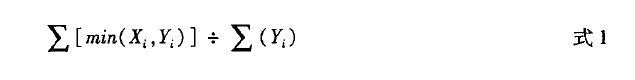
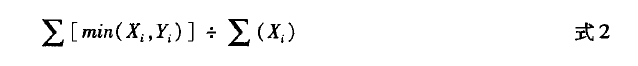
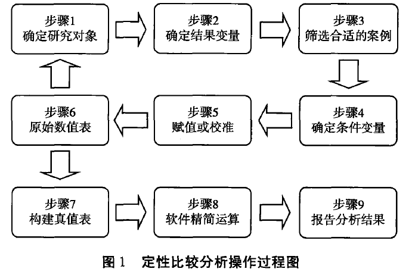

收录于合集

简
**刘丰
**
南开大学周恩来政府管理学院国际关系系副教授。
本文经国政学人公众号首发，转载请注明来处！
内容摘要
定性比较分析是社会科学领域中一种新兴的研究方法，由于它综合了定量研究与定性研究两种主流研究方法的优势，并且擅长处理社会现象中普遍存在的复杂因果关系，因此它已经在社会科学研究中得到了较为普遍的关注和应用。定性比较分析在具体运用过程中形成了清晰集分析、模糊集分析与多值分析三项主要分析技术，而且新的有关时序分析的技术也在开发之中。在国际关系学界，定性比较分析的应用成果主要集中在战争、冲突和威慑等传统安全研究领域。定性比较分析的实际操作过程可以分为研究设计、软件计算和结果表达三部分，每一部分都包含了若干特有的步骤和技巧。由于综合了定量分析和定性分析的优势并弥补了它们的明显缺陷，定性比较分析具有很强的方法优势，但仍存在案例敏感性高、条件变量的数量限制、变量取值缺乏客观标准、无法有效处理时序问题等不足。
关键词
定性比较分析 定性研究 定量研究 国际关系研究方法
定性比较分析（qualitative comparative analysis,简称QCA)是社会科学领域一种新兴的研究方法也被视为一类分析技术的统称。为了避免与定性研究方法和比较研究方法混滑，它也被称为“集合论方法（set- theoretic method)”。自20世纪80年代研究者开发出这一方法以来，它已经发展出清晰集分析、模糊集分析与多值分析三项主要分析技术，而且新的有关时序分析的技术也在开发之中。由于擅长处理中小样本数量和因果关系复杂的社会现象，定性比较分析在不断完善的过程中被广泛运用于社会学、政治学等学科，尤其是在比较政治学领域产生了诸多研究成果。作为一种新兴的研究方法，定性比较分析也适合在国际关系学科推广和大范围应用。这是因为，国际关系研究领域时常会进行中小样本的研究，样本量的限制使得研究者无法使用大样本统计分析，而且国际关系的研究对象通常都具有一果多因的复杂因果关系。目前，国 际关系学界已经出现了一些应用比较定性分析方法的成果，但是对于这一方法的重要概念、主要分析技术、重要操作步骤及其需要改进的缺陷的认识都还有待进一步加强。
定性比较分析的路径
定性比较分析既是一种研究方法,也是一类分析技术的统称，最早由著名方法论专家查尔斯•拉金（Charles Ragin)于1987年提出与社会科学领域常用的其他研究方法相比，定性比较分析出现才不过20多年，这使得它在相关技术手段的研发上还 有较大的发展空间,并且在社会科学研究中也得到越来越多的应用和认可。
定性比较分析使用布尔代数(Boolean Algebra)与集合论思想来进行中小数量的跨案例比较研究,从而处理多个原因与同一结果之间的逻辑关系。具体说来，定性比较分析就是将要解释的每个案例都看作一系列条件的组合（configurations)，在确定所要解释的特定结果（结果变量）和解释原因（条件变量）的基础上，研究者通过跨案例比较找到二者之间的逻辑关系和精简细化后的影响结果的条件或条件组合,从而发现 蕴含在众多案例中复杂的因果关系。从功能上说，定性比较分析可以帮助研究者汇总案例数据、考察数据的一致性、检验现有假设或理论、完善原有理论甚至构建新理论。在分析技术方面,定性比较分析拥有自身独特的数据处理方式，清晰集分析、模糊集分析与多值分析是发展成熟、运用广泛的三种分析技术，其中清晰集分析和模糊集分析更具影响，而时序分析等新技术也在发展之中，定性比较分析是上述分析技术的统称。
定性比较分析的出现在很大程度上是由于社会科学研究者反思定量分析和定性分析两种主流研究方法各自优劣的结果。近几十年来，国别政治、比较政治、国际关系等政治学分支领域都完成了从传统方法向科学实证方法主导的转型。在国际关系学界的主流学术期刊上，采用科学研究方法的论文占据绝对多数。值得关注的是，在倡导社会科学方法的学者内部,围绕定性研究方法与定量研究方法优劣的争论由来已久，在研究技巧、分析工具和操作方法等方面形成了巨大分野。围绕着采用归纳法还是演绎法、数量分析还是非数量分析、少数案例的深度研究还是大量案例的系统考察等方法论问题,不少学科内部的学者都展开了争论。以政治学领域为例，2000年左右爆发了一场围绕美国政治学会及其会刊《美国政治学评论》的“改革（Perestroika)”运动，形成数量分析阵营与非数量分析阵营之间展开的最著名论战,被认为是一场“玩数字”和“不玩数字”的学者之间的战争。
显然,无论是定性研究方法还是定量研究方法都有它们自身的优势，同样二者也 都存在一定的不足,研究者需要注意不同方法的适用性和局限性。以案例为导向的 定性研究方法强调在有限的案例中寻找解释与规律,通过深入发掘这些案例,得出在自身研究范围内非常具有解释力度的结论,也可以被以后的研究弥补完善,从而完成知识的积累。然而,对定性研究方法的主要批评也在于它得出的结论范围相对有限、适用范围窄和缺乏更加有效的对比。相反，以变量为导向的定量研究一般采用大样本的研究方式,追求更大范围的解释。虽然定量研究方法得出的一般性解释可能并不适用于某些具体案例，但它在解释广度上要远远超过案例导向的研究方法。因此,案例导向的研究方法与变量导向的研究方法存在巨大差异，前者注重解释深度，后者则注重解释广度。在査尔斯•拉金看来，两种方法是可以互补的，如果可以开发出一种“合成策略(synthetic strategy)”将二者综合为一种方法,就能够拥有二者所长：既可以加深研究的深度，同时也可以扩大解释范围。近年来，不少方法论的讨论也呼应了拉金较早提出的观点,试图弥合定量分析与定性分析之间的鸿沟，运用多种方法进行混合研究，从而使研究过程更加严密、研究结论更为严谨。
基于上述原因，拉金等学者开发了定性比较分析这种研究方法和与之相关的多种分析技术。可以说,定性比较分析是一种集合了定性分析和定量分析长处而发展出来 的研究方法,它既关注定性研究的复杂性特征也没有忽视定量研究的一般性特征。首先，它以案例为导向,将案例视为一个复杂整体来分析导致某些结果的解释条件及其组合，从而处理“多重并发因果（multiple conjunctural causation)”，即多个不同的条件组合作用下可能产生某个相同的结果。其次，它在赋值和运算上与定量方法有相似之处，也拥有定量方法的优势：可以同时处理多个案例，而且分析过程是透明的、可重复操作的。最后，严格说来,定性比较分析同定量分析方法还是有着根本差异，定性比较分析更注重找出案例中包含的条件变量和结果之间的逻辑关系，也就是更加注重各个案例的属性，而定量方法重视分析相关性。
与大样本回归分析为代表的定量研究和案例研究代表的定性研究等主流研究方法相比，定性比较分析仍然是一种略显“小众”的研究方法。不过，随着分析技巧的完善、研究软件的开发以及相关课程的开设，这一方法的运用也在欧美学界不断普及。艾克赛尔_马克斯(Axel Marx)等人对39种社会科学学术期刊所发表的定性比较分析类论文进行统计的结果表明，运用这一方法的论文数量从2000年的约50篇增至2011年的约310篇；而对具体学科进行细分的统计表明，运用该方法的政治学论文数量从约20篇增至约120篇。由此可以看出，定性比较分析方法的应用正在社会科学的不同学科中得到普及和拓展。
定性比较分析的主要技术
与定量分析和定性分析一样,定性比较分析也是多种不同的分析技术和分析工具的集合。通过查尔斯•拉金和后续一些学者的不断改进和完善,定性比较分析逐渐分化出清晰集分析、模糊集分析、多值分析以及时序分析等主要分析技术，其中清晰集分析是最为基础的分析技术，模糊集分析在最近的一些研究中应用最为广泛。
(一)清晰集定性比较分析
清晰集定性比较分析（crisp-set qualitative comparative analysis,简称 cs/QCA)是查尔斯•拉金最早开发的分析技术，也可以被视为定性比较分析的基础技术,其他分 析技术的基本思想和技术原则都在不同程度上继承了清晰集分析的原则。简单说来，清晰集分析结合了布尔代数与集合论，用来分析二分变量（变量取值分别为0和1)。在实际操作中，清晰集分析必须将条件变量与结果变量根据案例情况与理论知识赋值 为“1”或“0”，用这两个值表示某个变量两种截然相反的性质状态，比如“存在”或“不存在”,赋值为1的变量可以用大写字母表示，赋值为0则可以用小写字母或在大写字母前加“~”来表示。理论上，条件变量的不同取值就会构成2k个不同条件的组合，其中指数k是条件变量的数量，但在实际中由于案例所限，研究者只会处理一部分条件组合，与案例无关的条件组合则被称为逻辑余项（logical remainder) 。虽然逻辑余项不是当前案例所包含的条件组合,它们在现实世界中还不存在,但它们却可以帮助研 究者得出更为精简的解释路径。
完成所有变量的赋值后,研究者就可以利用相关软件构建出用来进一步分析与精简运算的真值表(truth table)。真值表包含结果变量、条件变量以及案例的相关信息，是定性比较分析的核心要素之一，几乎所有的定性比较分析技术都会使用真值表。清晰集分析在进行精简真值表运算时遵循的是“布尔最小化”原则。布尔最小化原则是指:“如果在两个布尔代数表达式中只有一个条件的取值不相同，且它们得出相同的结果，那么这个取值不同的条件就是冗余的、可以删除的,这样就可以得出一个较为精简的布尔代数表达式。”比如，在等式A
- B * C+A * B * c = Y中，无论条件C的取值是1还是0，ABC和ABc这两个条件组合都可以得到Y这个结果，因此，在接下来的运算中，条件C和c就可以删除，等式就可以简化为A
- B = Y。通过这种方式，不仅算式中的冗余条件可以删除,而且也可准确找到影响结果变量的条件或条件组合。清晰集分析的表达逻辑与运算原则不仅可以运用于清晰集分析本身，也可运用于其他的定性比较分析技术。
清晰集分析是拉金最早结合定性方法和定量方法所开发出的定性比较分析技术，至今仍是定性比较分析中运用最为广泛的分析技术。然而，清晰集分析也有其局限性，尤其是只能用于分析二分变量，对于变量的取值只能是非此即彼的1和0，因此无 法用于处理数学信息更多的定序变量和定距变量。显然，在许多研究中变量很难是非黑即白、非此即彼的状态，过度简化现实必然会带来解释力度的不足。同时，变量的二分取值也容易造成分析中出现过多矛盾组合,这也需要研究者做进一步的处理。出于这些原因,拉金在2000年出版的《模糊集社会科学》一书中开发出模糊集（fussy- sets)分析技术以处理多值变量，试图弥补清晰集分析的缺陷。
(二)模糊集定性比较分析
模糊集定性比较分析（fussy-sets qualitative comparative analysis,简称 fs/QCA)中的“模糊”并不是不清楚、混乱的意思,而是指变量不同的隶属值(membership scores)。在模糊集分析中,研究人员可以通过用0至1区间的任何数字来表达变量的隶属值，这个标准化各个变量的隶属值的表达过程就是校准（calibrate)。校准是模糊集分析的特有过程,也是非常重要的一步准备工作。在进行之前，研究者先要确定校准所用的定性锚值(qualitative anchor)来确定某一变量的赋值标准，比如常用的三值锚值除了清晰集所包含的1和0外，还具有0.5这一数值,它用来表示某一变量既不完全符合某一性质也不完全不符合某一性质的状态。锚值除了三值形式外，还有四值、六值甚至无穷的连续值,但无论何种形式的锚值都必须存在1和0这两个值。在确定锚值 后,研究者需要依据既有文献提供的理论或实际知识作为外部标准来对变量进行校准，不能以平均数或中位数作为校准的标准，而且连续型变量应尽可能利用专门软件来进行校准，避免手工计算出现错误。在校准的基础上，研究者可以基本完成变量赋值及标准化的工作,从而构建起模糊数值表。
在确定案例的阈值后，模糊集分析还需要对条件变量组合的吻合度(consistency)进行考察，吻合度是衡量条件变量与结果变量集合关系的数字指标，取值在区间［0，1］之间。一般说吻合度的最低取值是0.75，而吻合度越接近1，说明条件变量组合越可能是结果变量的某种解释条件——必要条件或充分条件。其中结果变量的必要条件与充分条件的吻合度计算公式分别为：


利用软件完成以上的步骤后，模糊集分析就可以构建出真值表，从而可以继续采用清晰集分析的原则进行精简运算。尽管模糊集分析较清晰集分析的步骤更加烦琐，但这种方法可以用0至1区间的任何数字来给变量赋值，进而用来分析多值的定距变量，从而突破了清晰集分析技术的瓶颈。由于模糊集分析的这种特性，使其在出现后受到广泛关注，有学者认为在分析中等样本量的情况下，它比回归分析更具优势。
（三）多值定性比较分析
与模糊集分析类似，多值定性比较分析(multi-value qualitative comparative analysis，简称mv/QCA)也是基于清晰集分析的重要局限——只能分析二元变量——而开发出来的,但与模糊集分析不同的是，多值分析的条件变量取值是离散而非连续的,而且结果变量取值也仍然是二元划分的。可以说，多值分析介于清晰集分析与模糊集分析之间,“没有那么明确，但也没有那么模糊”。同时,开发者认为，多值分析在处理中小样本量的功能上要好于模糊集分析。
多值分析具有以下三个特点:首先,多值分析不是拉金开发出来的,而是由德国学者德克•博格-施洛瑟（DirkBerg- Schlosser)和拉瑟•克隆奎斯特（Lasse Cronqvist)等人开发,使用名为T0SMANA的分析软件进行相关操作。其次，多值分析也是基于清晰集技术发展而来,并且在很多技术原理上都与清晰集分析相同，比如在精简真值表的原则上,多值分析也遵循清晰集分析的布尔最小化原则。最后，多值分析与清晰集分析最大的不同是它可以对变量进行多重划分，突破清晰集分析只能做二分处理的限制。比如克隆奎斯特提到的交通灯例子，如果定性比较分析中需要使用交通灯红黄绿灯三个颜色这个变量，那么清晰集分析就要创造三个二元虚拟变量，并且还要排除现实不存在的多个灯同时亮（都取值为1)的情形，而多值分析只需创造一个变量，将三个颜色简单赋值为0、1、2即可。因此,多值分析弥补了清晰集的不足，在分析中可以处理更多变量的信息,更有效地解释一些研究对象。
事实上，多值分析可以看作清晰集分析的一般化，即清晰集分析只是多值分析的一个特例,在多值分析的框架下，某项研究所有变量的取值都只有两值。从这个意义上说,清晰集分析的过程完全可以在多值分析中展开。然而，多值分析本身也还存在一些不足,比如,结果变量仍必须是二元取值，而且在影响力上还无法同清晰集分析和模糊集分析相比，目前公开出版的学术成果数量也相当有限。最近，唐世平带领的团队开发出一款名为“全功能多值定性比较分析（fullyfunctional multiple-valued QCA,简称fm-QCA) ”的软件，旨在突破多值分析结果变量二元取值的限制，同时也具备了逻辑化简、生成重要参数等功能。如果该软件能够得到普及和广泛运用，多值分 析的滞后状况会得以改变。
**（四）时序分析
**
虽然上述三种定性比较分析技术可以有效得出结果变量同条件变量之间的逻辑关系，并给出最优的条件组合，但是它们并没有区分条件组合之间的发生顺序。这也 意味着,上述分析技术假定条件变量的作用与影响没有先后之分，由此导致不同变量之间实际上存在的时间先后顺序成为一个被忽略的维度。相比之下，大样本统计分析 对时间序列数据有比较成熟的分析技术。在一些研究者看来，导致不同结果的条件组 合是由一系列有先后顺序的变量组成的，它们的排列会显著影响分析结果,因此有必 要开发出能够处理变量之间时间次序的分析方法。
这项工作最初由纽约大学的尼尔•卡伦（Neal Caren)和阿伦•帕诺夫斯基(Aaron Panofsky)两位学者完成，他们开发出时序定性比较分析（temporal qualitative comparative analysis,简称TQCA)。作为新近发展出的一种分析技术，时序分析更像是定性比较分析思想的一个补充，其诸多分析技术原则同其他定性比较分析技术的原则基本类似。时序定性比较分析重点关注时间这一被忽视的维度,它在描述条件组合中加入表示时序的符号，表示“然后（then)”的意思，比如A—B表示条件A的发生在条件B之前，也就是先A然后B。由此，条件组合可以反映时序上的先后关系。然而,时序分析还不成熟，其主要缺陷在于，条件组合的数量会随着条件增多而呈现指数级的增长，其他定性比较分析的条件组合数量是2k,而时序分析则是“k!*2k”（k表示条件的数量），比如条件变量是4的话，其他的分析技术只需要处理16个条件组合,而时序分析则要处理384个条件组合。针对这一问题,卡伦和帕诺夫斯基认为可以通过仔细研究案例内部的内容,排除一些不相干的组合,从而减少不必要的条件组合。
拉金本人也认可时序分析对定性比较分析核心思想的拓展，承认时序是因果关系中的一个重要方面,但他也指出卡伦和帕诺夫斯基的时序分析技术中的精简办法不能从根本上解决几何级数量条件组合的问题,同时提出了自己的解决办法。同样，日本学者日野爱郎（Airo Hino)则创造出了自己的时间序列分析技术，称之为时间序列定性比较分析(time-series QCA，简称TS/QCA)。简单说来，时间序列分析技术利用定性比较分析的思想处理时间序列数据，从而实现条件变量的时间维度分析，同时又避免出现条件变量组合大量增加的情况。尽管一些学者已经关注到定性比较分析中的时间维度，但时序分析的相关技术还处在发展阶段,不仅自身还存在一些亟须解决的技术问题,而且目前尚未出现使用这些技术的研究成果。
定性比较分析在国际关系领域的应用
近年来，随着相关分析软件开发的日渐增多以及分析技术的日趋成熟，定性比较分析的应用越来越广泛，相关的开发人员及应用学者成立了一个名为“系统跨案例的比较方法（Comparative Methods for Systematic Cross-Case Analysis,简称COMPASSS) ”的网站，不断更新定性比较分析的最新进展和应用成果。在国际关系学界,有关定性比较分析的应用也在累积之中,尤其是在战争、冲突、威慑等传统安全研究领域出现了不少研究成果,而在非传统安全、国际政治经济学、全球治理等其他领域的应用还处在探索阶段。依据研究问题的性质,我们可以将既有研究分为两类:一类是对特定国际现象的性质与特征的研究，另一类则是对不同国家在特定情形下的行为差异的比较研究。
有关特定国际现象的研究主要关注的是国家间战争的爆发与结束、危机的发生与升级等。埃德加•凯泽（EdgarKiser)等人利用回归分析和清晰集定性比较分析两种方法探讨15世纪至18世纪西欧国家统治者的自主权（rulerautonomy)与其发动战争之间的关系。他们将统治者的自主权分为资源自主权和制度自主权两类,通过对相关数据进行回归分析发现，拥有资源自主权的统治者更倾向于发动战争。在进行定性比较分析之后，三位作者进一步发现，拥有制度自主权对统治者发动战争的影响较弱，只有在加人其他因素的情况下,统治者才倾向发动战争。廖小娟（Hsiao- ChuanLiao)则利用清晰集定性比较分析讨论国家对现状的不满及其发动战争的行为，她认为，如果一国满意与别国的现状或军事力量不对等,那么该国不会向别国发动战争，而经历权力转移的国家在有领土争端或领土威胁的情况下更可能发动战争。
由于内战、族群冲突等国内层次的战争越来越突出，一些学者也利用定性比较分析研究了这些国内冲突爆发的原因和条件。普拉卡什•阿迪卡里（PrakashAdhikari)和斯蒂文•桑福德(Steven Samfbrd)利用模糊集分析技术，分两个时间阶段来讨论尼泊尔75个地区内部叛乱组织的壮大以及内战问题，他们发现尼泊尔内战的愈演愈烈主要是因为尼泊尔政府无差别镇压国内反对势力，致使这些势力投向了叛乱组织,导致内战在全国大范围爆发。埃德加•凯泽等人在讨论叛乱与对外战争的关系中，利用清晰集定性比较分析技术研究1400-1700年的欧洲历史,发现以往讨论的叛乱与对外战争关系的观点没有得到自己分析的支持，只有在“边缘地区”的国家中才发现一些国家是因战争导致的国力衰微从而引发叛乱。
国际危机和冲突升级的条件一直是国际安全研究中的焦点议题。铃木秋里（Akisato Suzuki)和尼奧菲托斯.罗伊齐德斯（NeophytosLoizides)利用1987年至2002年希腊、土耳其与印度、巴基斯坦两对冲突国家的12次国际危机检验了有关冲突升级的 理论,他们发现安全困境理论与转移战争理论都能在不同程度上解释这些国家冲突升级的现象，并且地区组织的调停作用使得希腊- 土耳其之间的冲突升级程度有限。但新现实主义认为的核威慑有助于关系稳定的看法没有得到印巴冲突的验证，相反，二位作者认为核武器的存在反而更加恶化两个国家冲突的水平。陈思德(Steve Chan)则将研究聚焦于战争的终止，他分析了1945年至1992年期间的23场国际战争,发现实力对比等单一因素不能解释战争的结束,而且不同因素在不同环境下对战争的终结可能具有相同的作用,因此环境分析对战争终止来说就极为重要。
有关国家行为的研究关注的是不同国家面对相同情形时采取不同政策或同一国家在不同情形下采取不同政策的原因。在国家行为中,使用武力和进行军事干涉是不少研究关注的焦点。伊尔科•冯•马特(Eelco van der Maat)利用模糊集定性比较分析探讨在何种条件下美国不会对别国侵犯他国领土的行为进行干涉，他发现被侵犯的领土不影响美国霸权地位的稳定程度是美国不采取干涉的必要条件，而侵犯国同美国的安全联系或其不具有安全或经济上的脆弱性是美国不干涉的充分条件。黄德宜(Teh- YiHuang)则利用清晰集定性比较分析研究中国的对外使用武力行为及其对南海领土争端的影响，他发现传统的现实主义观点不能解释中国使用武力的行为，中国不会单纯因为经济或战略价值而在领土争端中使用武力，并且中国重视国际制度的作用，极少在国际制度调停争端的情况下还使用武力解决争端。针对理性威慑理论 (rational deterrence theory)有效性争论不休的问题,弗兰克.哈维(Frank P. Harvey) 利用清晰集定性比较分析技术重新评估了有关批判理性威慑理论的研究成果，发现原本一些批判理性威慑理论的数据实质上反而是支持这个理论的，可以说哈维的研究进一步推动了威慑理论的研究。
在外交政策研究中，分析国内政治中的某些因素如何影响一国的对外政策始终是一个主导性的视角。特雷弗•鲁本泽（Trevor Rubemer)利用清晰集定性比较 分析探讨美国国内族群利益群体对美国制定针对其母国对外政策的影响，虽然这个问题已经有了很多解答，但它们都没有得到系统的验证。作者发现，美国国内 族群利益群体的组织能力与政治活动水平是其成功影响美国对外政策的必要条 件。帕特里克•梅洛（Patrick A. Mello)关注的问题则是为何一些民主国家在 2003年伊拉克战争中会加人美国的军事行动而另一些没有加人。通过模糊集定 性比较分析作者发现,没有国家议会投票及宪法的限制是政治上偏右的政府加入伊拉克战争的充分条件；而在宪法规定军事行动必须通过议会投票决定的国家，其立法机构的偏好会决定该国加人战争与否。马蒂耶斯*科尼格- 阿尔基布吉(MathiasKoenig- Archibugi)则将视角放到了欧盟成员国上，他发现欧盟成员国对欧盟共同外交与安全政策的态度存在差异，有的支持、有的反对。利用模糊集定性比较分析,他发现国家实力、对欧盟身份的认同程度以及国内政治制度是具有显著影响的因素,弱国、认同欧洲身份以及国内政治分权程度高的欧盟成员国更倾向支持欧盟共同外交与安全政策。
除了关注国家的安全战略和政策外，定性比较分析也被用于分析一些国际政治经济议题。阿历克•蒂姆(Alrik Thiem)研究1996年至2006年西欧国家军事合作的经济动机问题，他利用模糊集定性比较分析发现西欧国家对提高集体防务技术以追求军工利润是其追求军事合作的充分条件之一，另一个条件则是西欧国家的政体比较相似，彼此之间的信赖度比较高。马科•平法里（Marco Pinfari)则利用模糊集定性比较分析研究时间压力对领土冲突中谈判进程的影响,他发现利用“限期外交(deadline diplomacy) ”确实会给谈判带来正面作用,但同时它对谈判成果的持久性是存在负面影响的。此后，平法里又进一步完善了时间压力的概念,并更加系统地讨论了这一因素对涉及领土争端的和谈的影响。在研究国际经济制裁的过程中,查尔斯•布莱克（Charles H. Blake)和诺厄•克莱姆（NoahKlemm)利用清晰集定性比较分析发现， 有关经济制裁的既有研究存在着“选择偏差”，它们夸大了制裁的效果,将一些制裁失败的案例也错误地认为是成功了，这种偏差很可能误导决策者制定政策,未来的研究也需要弥补这一缺失。
通过上文的评述,我们可以大致了解定性比较分析在当前国际关系研究中的应用情况。这些研究成果不仅说明了定性比较分析在研究国际关系中的广阔前景，同时也揭示了当前国际关系学界应用这种方法的一些特征。就当前的研究状况来说，多数研 究采用定性比较分析中的清晰集分析技术与模糊集分析技术,而且清晰集分析技术比模糊集分析技术应用得略多。此外,一些研究也会将定性比较分析技术与其他研究方法一道使用,尤其是结合回归分析等统计方法。当然，目前的应用成果采用的分析图 表格式不一,并没有形成使用统计研究那样的较为标准一致的示意图表,因此学界对定性比较分析的使用还处在发展期,有待标准化。
**操作程序与案例讨论
**
定性比较分析有着与其他常用研究方法不同的基本原理、核心概念和操作过程。考虑到定性比较分析具有多种不同的分析技术，在此，通过剖析应用最为广泛的清晰集分析和模糊集分析的必要操作过程,并且辅之以典型研究的讨论，我们可以说明这一方法的基本原则、实施步骤、具体应用以及需要注意的事项。
首先要指出的是，研究者对特定研究方法的选择是由所要考察的研究对象的性质、具体研究问题以及研究数据的可获性所决定的。一般而言，定性比较分析适合运用于分析经验现象的原因或条件以及对既有理论的可检验命题进行验证的研究中，而一些有关规范问题的讨论或者关注行为体互动过程的研究并不适于采用定性比较分析。就这一点而言，定性比较分析与统计研究方法有类似之处。与此同时,定性比较 分析更适合分析中小样本量的研究。尽管这一方法的开发者对其所能处理的样本量上限并无确切的说明，而且也有学者使用模糊集分析来处理大样本量,但出于研究稳健性的考虑，笔者认为利用这一方法进行分析的样本数量控制在100以内为好。如果样本量超过100，统计分析比定性比较分析更为合适，而如果样本量过小（比如在5个以下），那么案例研究方法会比较合适。
除了单独应用之外,定性比较分析也可以和其他研究方法一起使用。近年来，多种方法的混合研究（mixed-methods designs)在社会科学领域成为一种新的趋势。在研究实践中，一些研究者也同时使用定性比较分析和其他研究方法。以上文所介绍的一些国际关系研究成果为例，不少学者的研究同时运用了统计分析和定性比较分析。卡斯滕•施奈德（Carsten Q. Schneider)和克劳迪厄斯•瓦崎曼 (Claudius Wagemann)则指出，定性比较分析特别适合与案例研究方法一道使用，因 为对相关案例的细致探讨有助于研究者熟悉案例，以便开展后续的定性比较分析的操作过程。
在此，我们归纳出定性比较分析的9个关键步骤（参见图1及其中的数字）。为了更好地说明这一方法的具体操作,我们将对这些步骤进行较为详细的介绍,并且辅之以一些典型研究的讨论。这些关键步骤大体可以分为三个主要部分••研究设计、软件计算以及结果表达。为了使读者理解这一方法的操作和实施,本文使用两篇具有代 表性的文章作为范例:特雷弗•鲁本泽发表于《对外政策分析》的《少数族群利益集团 的属性及对美国外交政策的影响:基于定性比较分析的解释》（下文简称《利益集团》） 使用的是清晰集分析技术，《马蒂耶斯•科尼格- 阿尔基布吉发表于《国际组织》的《欧盟外交与安全政策的制度变迁:政府偏好的解释》(下文简称《制度变迁》)则使用了模糊集分析技术。之所以选取这两篇文章，主要的原因是它们都发表在国际一流学术期刊上，而且有一定的引用率。此外，这两篇文章在定性比较分析的使用上各有特点，具有一定的代表性。

研究设计是大多数社会科学研究的最初环节,涵盖了图1中的步骤1至步骤6。研究者首先需要明确研究对象的性质，并确定其是否适用于定性比较分析（步骤1)。在明确步骤1之后，研究者需要确定所研究对象的结果变量（步骤2)。结果变量类似统计分析的因变量，但二者存在着本质区别。在定性比较分析中,不同的分析技术需要不同形式的结果变量。完成步骤2后，研究者应根据所要解释的结果变量来捜集合适的案例（case)。案例是定性比较分析的核心要素，它类似统计分析中的样本。研究者需要根据结果变量的范围来筛选与之相关的案例,选择的标准和选中的案例也要尽 可能地写在文章中。为了更好地反映结果变量的变化，案例既要包括正面案例（与结果变量取值相符的案例），也要涵盖负面案例（与结果变量取值相反的案例）。此外， 研究者也要尽可能多地了解自己要分析的各个案例,这一点在后续分析过程中十分必要,对案例的充分了解可以避免很多不必要的调整过程。
在鲁本泽撰写的《利益集团》一文中,作者试图解释的是美国国内的少数族群利 益群体是否成功影响了美国的对外政策，其中的结果变量是“成功影响美国对外政策”。在提出研究问题的基础上,作者根据实际情况挑选了 10个具有代表性的案例，其中既有成功影响的案例，也有未能成功影响的案例。在《制度变迁》一文中,作者要 解释的结果变量是欧盟成员国对共同外交与安全政策的偏好程度，分析的案例则是20世纪90年代的13个欧盟成员国。必须强调的是，进行一次定性比较分析只能解释一个结果，经过多次分析得出的不同结果之间并没有必然联系。比如在《利益集团》一文中,作者仅对“成功影响美国对外政策”这一结果进行了分析,如果还要了解导致“未能成功影响”这一结果的条件，则需要再次进行软件分析，而不能仅根据前者的分析结果来推测后者的分析结果。
一般而言,在应用定性比较分析方法进行经验研究的大多数成果中，研究者都只解释了一个结果变量，较少有成果对所要解释的结果变量的相反取值再做出进一步的分析。就本文搜集的材料来看，没有任何技术开发者反对对结果变量正向和反向的双重解释,而且这样的应用很可能得出更具创造性的结论。因此，本文建议研究者尽可 能尝试采用定性比较分析进行正反两个方向的操作。
完成上述步骤后,研究者需要根据经验或既有解释来确定解释条件，即条件变量，这些解释条件应该大体能够解释结果变量。这里必须注意的是条件变量的数量。由于样本数量的限制，定性比较分析所处理的条件变量也不会很多,这样可以避免解释的碎片化。一般说来，如果分析的案例数量是10-40个，那么条件变量的数目应该控制在4-7个。研究者需要根据分析技术的要求完成结果变量与条件变量的赋值，从而构建起原始数据表,比如清晰集分析要求两类变量都是二元赋值,而模糊集分析则需要校准,将原来的赋值转化为隶属数值,校准的原则及锚值必须在文中得到明确说明。
第二部分是进行软件分析。目前,定性比较分析的常用软件有两个,分别是拉金 等人开发的fs/QCA与克隆奎斯特开发的TOSMANA，二者的共同之处是都可以进行清晰集分析,主要的功能差异在于fs/QCA可以进行模糊集分析而TOSMANA可以进行多值分析。此外，一些学者也介绍了如何运用Stata和R等常用统计软件进行定性比较分析的方法。软件分析的第一步（步骤7)是将原始数据表简化为真值表。在清晰集分析与多值分析中,这个过程需要处理矛盾组合;而模糊集分析则需要确定案例数量及吻合度的阈值。由于诸多因素的影响，研究者很难一次得出比较完美的真值表,这就需要研究者根据研究对象重新审视条件变量与结果变量的设置。研究者在对这些变量进行调整后需要重新制作原始数据表，并根据不同的技术要求进行简化,直 到真值表可以覆盖绝大多数的案例。事实上，这个过程极为烦琐,但绝对不能马虎对待。减少调整过程的有效办法就是加强对案例的了解，以便缩短真值表制作阶段的工作量。在得出基本覆盖所有案例的真值表及符合标准的吻合度后，研究者就可以进行步骤8，利用软件进行真值表运算，从而得出“解（solution) ”。解是定性比较分析得出的解释因果关系的路径,在解的表达中经常会用一些符号来表示变量之间的逻辑关系，比如用“表示逻辑上的“和”，用“+”表示逻辑上的“或”，用或“-”表示条件或条件组合可以推导出的结果。
总之,在软件分析环节中,数据操作与转化是研究者需要投人精力的重点环节。一旦数据处理工作完成,研究者只要熟练掌握软件的操作流程，后续的分析环节就比较容易。
第三部分是对软件分析结果的表达。这是定性比较分析操作的最后一个部分，既是对前述操作过程的一个总结与展示，也是研究者完成论文的一个重要组成部分。一般说来，定性比较分析需要研究者展示四类结果，分别是图、表格、数字和案例。
第一类是图。模糊集分析常用的是X-Y坐标图（XY- PIot),因为这种图可以最为清晰地展示子集关系，比如《制度变迁》一文中，作者就利用这种图来表达条件变量与结果变量之间的集合关系。清晰集分析通常用维恩图（Venn Diagram)来表示不同的条件组合。维恩图是用来说明各个集合之间关系的图示，通常由几个交叠的圆或椭圆构成，表示这些集合之间存在非空的交集。不过，维恩图在表达少数集合之间的关 系时比较容易理解。集合越多,维恩图中的圆形数量就会越多,识别集合重叠区域的 工作也随之变得更加复杂，因此不少研究成果中并没有采用维恩图。比如，《利益集团》一文直接采用真值表而不是维恩图来展示数据。
第二类是表格。定性比较分析要求研究者至少将原始数据表和真值表中的重要数据复制到文章中，这样才能做到科学研究要求的可复制性，同样也可以避免格式不一的问题。事实上,研究者在处理较大样本的数据时，囿于篇幅，很难将原始数据表完整表达出来,但可以将其作为附录放到文章末尾，以便其他研究者参考。除了上述两表外，还有些表格也比较重要，比如《利益集团》一文中的精简结果表,但这些表格没 有被要求一定出现在结果中。
第三类是数字。它既包含前文所述的变量校准或二元划分的锚值,也包栝最后分析得出的吻合度、覆盖度、净覆盖度、案例阈值等数值。其中，吻合度和覆盖度这两个数值最为重要。它们表示所对应解释单元的解释力和解释范围，并且也都会按照不同的解和不同的解释路径在软件分析结果中自动得出，研究者务必将其一一复制到文章 中，不能随意省略里面的数值。
第四类是案例。定性比较分析的最后一步要求研究者关注得出解的每一条解释 路径及相应案例，《利益集团》和《制度变迁》这两篇文章都用了不少篇幅来阐述解释 路径的含义和包含案例的情况。为了对研究假设做出严谨的检验，研究者需要熟悉所 研究的全部案例，能够找到每一条有效解释路径所对应的案例。当然,受篇幅所限,研究者不可能将每个案例都阐述一遍，在案例数量很多的情况下，研究者只需要重点阐 述代表性案例。
此外,在将分析结果转换成正式论文时,研究者要注意专门术语的使用。定性比 较分析有一些其他研究方法不常使用的概念，比如“条件变量”和“结果变量”，研究者最好不要用“自变量”和“因变量”代替它们。这是因为，尽管表面上看这两对概念意义相似,但实际上它们的思想基础相差很大,定性比较分析衡量两个变量的核心是子集关系，即几个条件变量以某种方式组合起来导致结果变量，而不是统计学意义上的 相关关系。
囿于篇幅,本文不可能穷尽每一个细节，只能对定性比较分析的基本操作步骤做简要展示。为了更加充分地了解定性比较分析的操作过程，研究者有必要参考相关的技术操作手册。同时，拉金等人也曾经撰文阐述过高标准操作定性比较分析的注意事项,虽然这些标准对研究者理解与正确操作技术大有裨益,但这些标准比较烦琐,研 究者也很难完全遵守，需要进行必要的取舍。
尽管定性比较分析是一种比较新的研究方法，但它提供了一种分析复杂因果关系 的研究路径。由于国际关系学科的研究对象通常都是由多重因素所导致的,这种方法比较适合分析具有复杂因果链条的国际关系议题。同时，研究者经常会面对样本量较小的情形,定性比较分析也比统计分析更加适用。在发挥定性比较分析方法所具有的优势的同时,我们也应该注意,这种方法远不如定量研究中的诸多分析技术那样成熟和应用广泛，还有一些有待改进的局限和不足。具体而言,这些缺陷主要表现在以下四个方面。
第一,案例敏感性(case sensitivity)高。定性比较分析的优势在于分析中小样本量的案例,并将分析中的所有案例视为一个复杂整体,从而根据各个案例中结果变量 的条件及其组合筛选出最为精简的解释路径。尽管这一路径有助于实现定性分析所 擅长的探人分析，但同时也使得它对案例的变化敏感度极高。可以说，在定性比较分 析处理数据的过程中，删除或增加某些或某个案例很可能得出完全不同的结论。虽然 有观点认为这种案例的变化所带来的结论变化正是定性比较分析的优势,因为这样得 出的结论可能解释力度更大，但可以说案例敏感性高仍是定性比较分析的一个“先天”不足。
第二，条件变量的数量限制。由于定性比较分析所采用的计算方法是布尔代数，如前所述，在构建真值表的过程中，条件变量在布尔代数计算原则下会形成2k个条件组合。在这种情况下,每增加一个条件变量，条件组合的数量就会呈几何级增长。在这里,数量本身的增长可能不是一个严重的问题,但条件组合数量的增长必然会带来解释的“碎片化”，因为每个案例拥有的条件组合都很可能是独立的,研究者几乎不能做出任何精简。当然，针对这种不足’也有学者提出了一些补救措施，如两步模糊集定 性比较分析(two-step fs/QCA)技术。
第三,变量的定性划分标准不够客观。在清晰集分析技术中，变量的二元划分是饱受争议的一点,虽然这样处理变量可以做到简化复杂性,但也同样使被处理的变量失去了很多有价值的信息。通过后续的改进，拉金、克隆奎斯特等人开发出了模糊集分析以及多值分析的技术，二元划分变量的不足之处得到了极大改变。然而，无论是多值分析的多元划分还是模糊集分析的校准过程都需要对变量进行性质的划分,而 对变量进行定性划分缺乏客观而统一的标准仍是定性比较分析的一个软肋。比如，研究者很难界定一国的国内生产总值水平是高还是低,这样研究者只能根据主观意愿，人工设置销值标准。这种做法具有很大的主观性,对于客观中立的研究来说是不 允许的。虽然开发者已经提出了一些处理办法，但在目前，定性比较分析的各种分析 技术尚不能有效地解决这个问题。
第四,无法有效处理时序问题。尽管一些研究者在开发时序分析方面进行了尝 试，但定性比较分析仍然不能有效处理变量之间的时间关系。正如上文讨论时序分析 技术那样，定性比较分析的其他分析技术只能假定变量之间的时序变化不会影响结 果。显然，这一假设并不符合研究实际。后续的研究者虽然已经注意到这个问题并进 行了大量的改进工作，但定性比较分析中的时序问题还没有得到根本解决。
总之，定性比较分析的优点是分析中小样本量的研究对象，并可以有力地揭示复 杂因果关系，得出精简过的条件与条件组合。这使得它可以成为国际关系学一种有效的研究方法。但其也存在不足,尤其是案例敏感度高和条件变量的数量限制问题,属于定性比较分析的思想基础，在当前很难克服。相比之下,变量的定性划分和时间序列方面的缺陷可以通过研究者努力，开发出更加精致和完善的技术产品来弥补。
结论
定性比较分析是一类分析技术的统称，这类分析技术将每个案例都视为一个由变量组合起来的整体,通过对这些案例的对比分析,来找到不同条件或条件组合对案例的解释程度。通过这种路径，定性比较分析能有效处理因果复杂性、精简案例中的变量,得出最为精简的解释。定性比较分析试图在定性研究的深度与定量研究的广度之间找到平衡，其独特的方法论基础和研究路径吸引了不同社会科学领域的学者进行尝试,其在国际关系研究中的价值也在逐渐显现。笔者认为，了解定性比较分析的思想基础、分析技术、应用情况和基本的操作步骤有利于推动中国国际关系研究的多样化。定性比较分析还处在发展阶段，随着分析技术的进一步完善，其分析能力和应用前景也会在国际关系研究中得到加强。
文章来源： 《世界经济与政治》2015年01期
筛选： 晞哲 编辑： 敖遊
声 明
国政学人微信公众平台系非盈利学术平台。建立初衷是方便广大学人进行学术研究，促进学术的传播和交流，不做任何商业用途。如有任何权利问题，请直接与我们联系。